双列书架，一眼找到
每页 2 本，封面自动裁掉多余留白；育儿手册置顶，点击封面即可进入阅读。
《悦泽图书》是悦泽心理出品的电子书阅读应用，收录儿童心理、情绪管理、学习力与亲子成长等系列图书。内容全部加密内置，支持离线阅读、手势翻页、自动翻页与中文语音朗读。
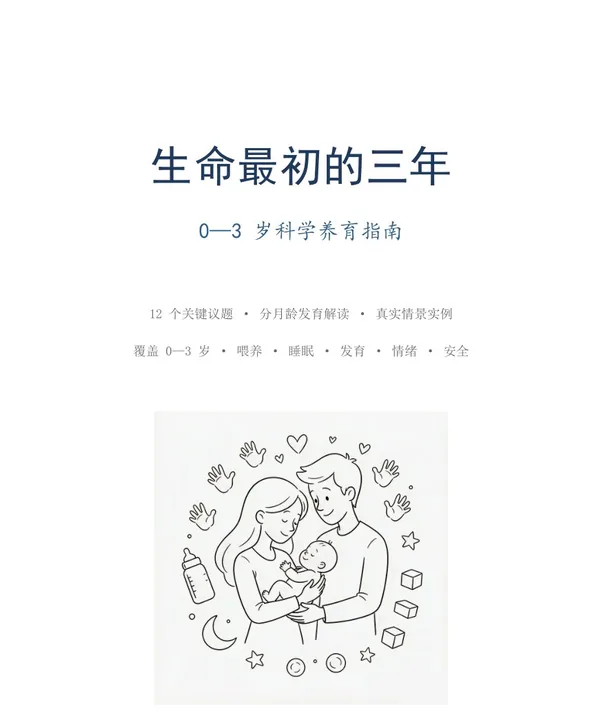
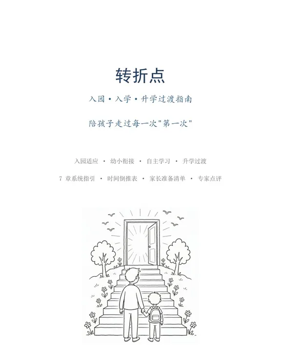
界面为功能示意，非真机截图
从书架到阅读，再到隐私与安全，每一项功能都围绕「随时翻开、安心读完」打造。
所有电子书内容在打包阶段即完成加密封装，APK 内不存在可直接打开的明文页面或文本。
从书架到阅读，再到隐私与安全，每一项功能都围绕「随时翻开、安心读完」打造。
每页 2 本，封面自动裁掉多余留白；育儿手册置顶，点击封面即可进入阅读。
左右滑动翻页并带平滑动画；双指捏合缩放 1–6 倍，放大后可拖动，双击复位，缩放时不会误翻页。
无需弹窗，单击按钮在 关 / 10 秒 / 20 秒 / 30 秒 / 1 分钟 间循环切换，读到末页自动停止。
调用系统中文 TTS 朗读当前页；每页只朗读一遍，翻到新页才开始读新内容，不会重复播放。
「关于」页集中展示版本号、隐私保护条款、免责声明与问题反馈方式，微信和邮箱可一键复制，方便随时联系我们。
封面、页面图像与朗读文本全部封装为加密媒体包，APK 内无明文图片或文本，不联网也能完整阅读。
覆盖核心手册、年龄延展、主题深挖、形式创新、角色与专业及情绪绘本六大系列；每本均附内容简介，内容全部随 App 加密内置，无需下载。
悦泽心理的代表作，覆盖 3—12 岁家庭的 48 章、144 个实例情景。以「典型表现→背后的原因→建议与实例→容易踩的坑→专家点评」的五步法，系统回应成长中的高频难题。
面向新手父母的 0—3 岁养育指南。以发展心理学和儿科学为依据，逐月厘清「什么正常、什么需要警惕」，从依恋关系、感统发育到分离焦虑与如厕训练，给出可操作做法。
面向 11—18 岁孩子家长的青春期亲子读本。既不妖魔化青春期，也不空谈尊重理解，而是给出身体发育、情绪风暴、同伴压力、手机网络与心理危机识别的具体沟通话术和边界设定。
把入园、幼小衔接、小学中段、小升初、转学等关键转折整理成独立读本。每个过渡期都配「家长准备清单」和「时间倒推表」，帮助家长提前规划，而不是临时抱佛脚。
选取二胎争宠、厌学、被欺负、手机沉迷、考试焦虑五个典型问题，每个故事分别从孩子、父亲、母亲、老师等多视角叙述同一件事，最后由心理学专家点评每个人的作用与反思。
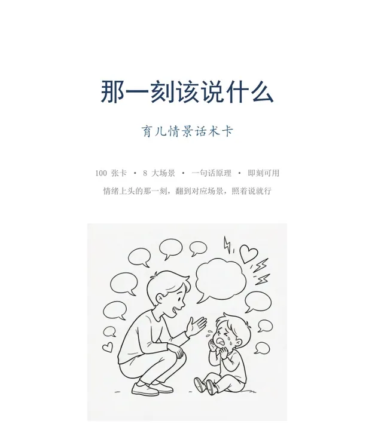
从 144 个实例情景中抽取高频场景，做成「那一刻到底该说什么」的口袋速查卡。错误说法与正确说法对照，再配一句话原理，把方法论变成随时可用的沟通工具。
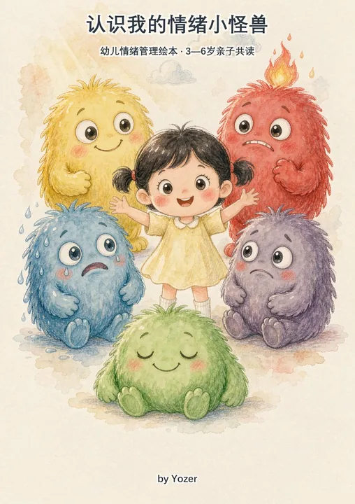
情绪小怪兽系列第一册。把抽象的情绪变成孩子看得懂、愿意读的形象，帮助 3—6 岁幼儿认识自己的各种感受，是家长读手册、孩子读绘本的亲子共读闭环起点。
情绪小怪兽系列第二册。用故事和图画告诉孩子：生气是正常的，关键是如何表达。把专业情绪管理方法转化为幼儿能理解的应对方式，适合反复亲子共读。
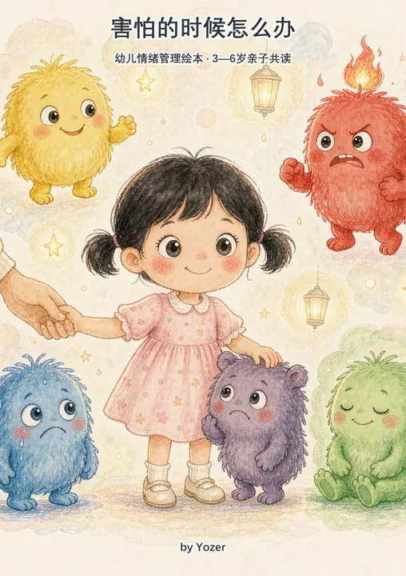
情绪小怪兽系列第三册。围绕孩子常见的恐惧与胆小，用温柔的画面和语言接纳害怕的感受，再给出可尝试的小步骤，帮助孩子在游戏中慢慢建立勇气。
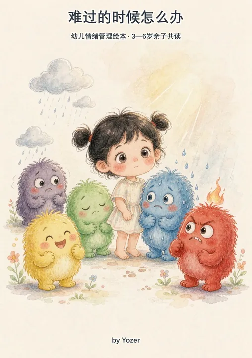
情绪小怪兽系列第四册。教孩子辨认难过、说出难过，并知道难过时可以向谁求助。让情绪被看见、被命名，是幼儿情绪调节能力发展的第一步。
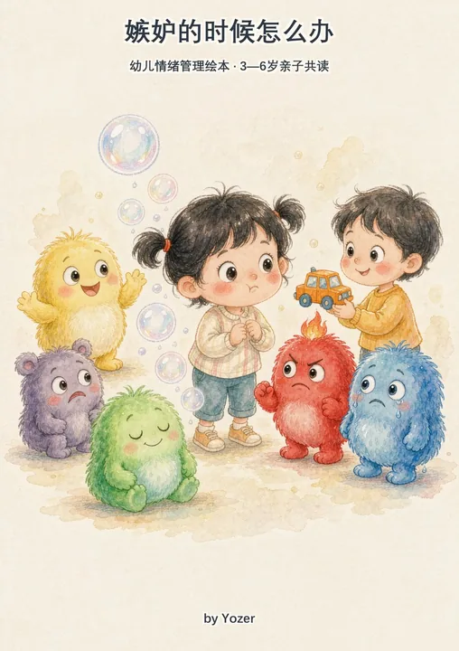
情绪小怪兽系列第五册。针对二胎与多子女家庭中常见的嫉妒、争宠感受，从孩子视角讲述「为什么我会不舒服」，帮助手足之间学会表达与相处。
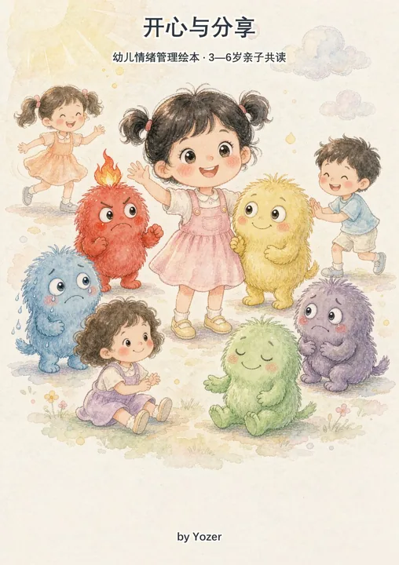
情绪小怪兽系列第六册。从积极情绪出发，让孩子体会开心、感激与分享的快乐，把美好的感受变成可以重复的经验，而不只是讲道理。
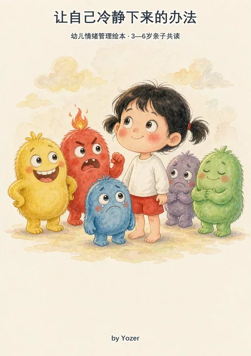
情绪小怪兽系列第七册。把深呼吸、暂停、冷静角等方法画成孩子能照着做的图画步骤，让「先冷静下来」从一句要求变成孩子自己掌握的小技能。
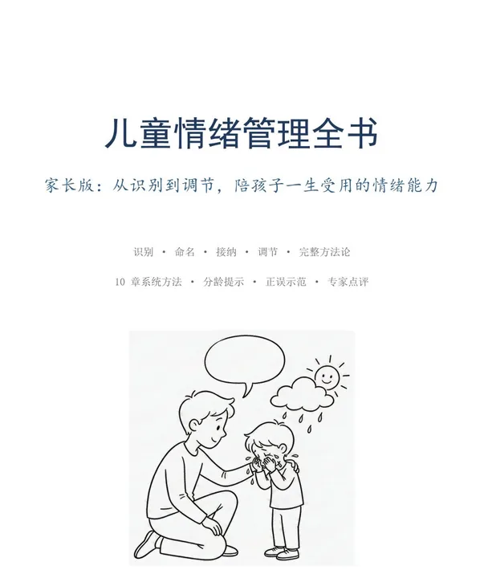
把情绪主题扩展为「识别—命名—接纳—调节」的完整方法论，覆盖愤怒、焦虑、恐惧与情绪爆发现场，也谈家长自身情绪和家庭氛围，并配有孩子可用的练习册。
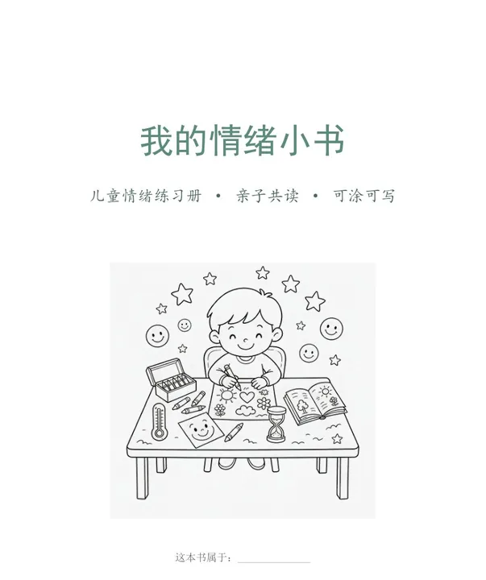
《儿童情绪管理全书》的配套孩子练习册。情绪温度计、冷静角打卡、心情日记等互动页，让方法从「家长知道」变成「孩子会做」，适合亲子一起动手完成。
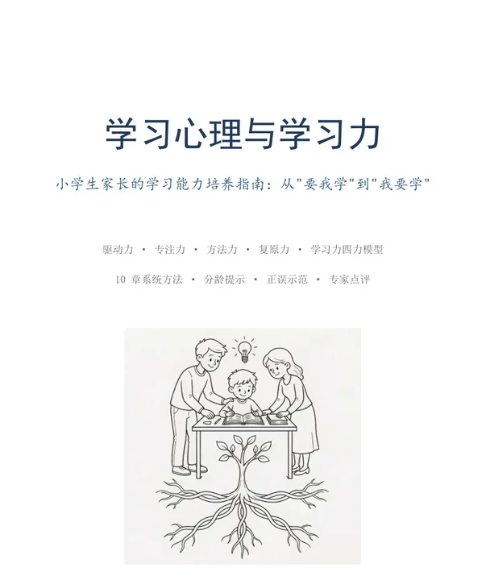
面向小学生家长的学习能力培养指南。从学习动机、专注力、作业习惯、阅读与复习，到考试焦虑、成长型思维和厌学干预，既讲方法也讲心理，不流于技巧堆砌。
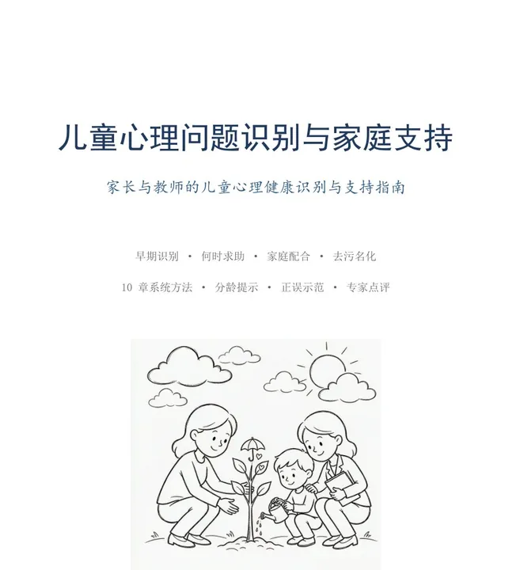
面向家长与教师的专业科普读本，围绕 ADHD、焦虑、抑郁、抽动、孤独谱系、强迫等主题，以「早期信号识别—何时求助—家庭如何配合」为主线，专业门槛高、竞品少。
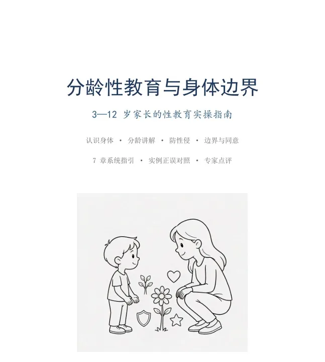
按 3—6 岁、6—9 岁、9—12 岁分龄展开，说明「该说什么、说到什么程度、怎么回答尴尬问题」，并覆盖防性侵教育与「同意」的概念，给家长可直接使用的具体话术。
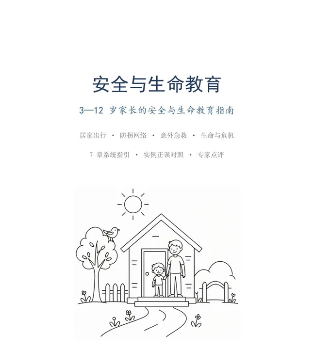
把居家与交通安全、防拐骗、网络与信息安全、意外伤害预防系统化，并强化常被忽视的死亡与生命教育、灾难与危机中的心理支持，兼顾防护技能与生命态度培养。
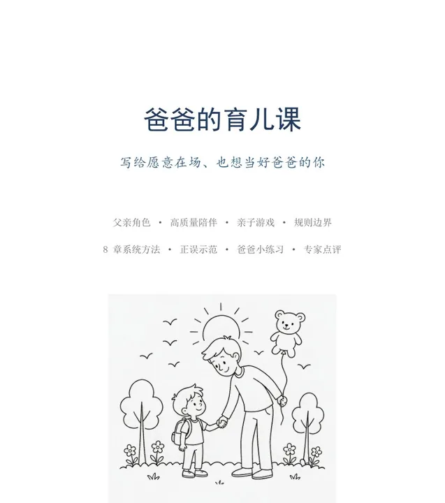
专写给父亲的育儿读本。强调爸爸在规则、探索与独立性上的独特作用，语言更直接，涵盖爸爸专属亲子游戏、忙碌爸爸的高质量陪伴，以及夫妻教养分歧的处理。
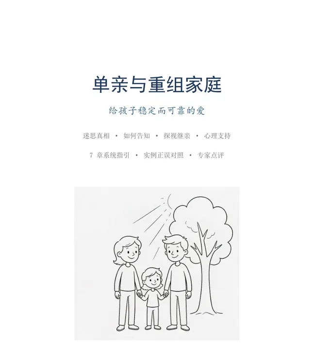
去标签化、不评判，回应单亲与重组家庭的真实难题：如何告诉孩子、如何面对探视与继亲关系、重组家庭怎样磨合，以及怎样在经济与时间压力下给孩子稳定感。
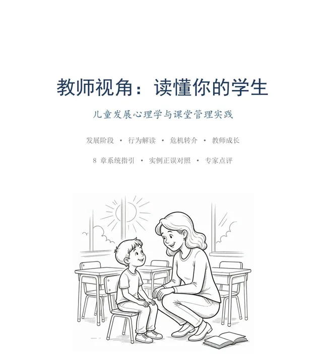
面向幼儿园与小学教师的 B 端专业读本。把儿童发展心理学与课堂管理结合，帮助教师读懂行为背后的原因，覆盖课堂注意力、师生沟通、校园心理危机识别与转介。
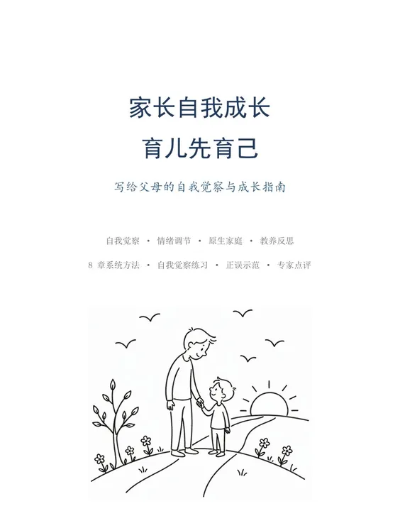
把育儿上升为育己。从父母的情绪触发器、原生家庭的影响、完美主义陷阱到夫妻关系与自我关怀，帮助家长完成自我觉察，构建成长型家庭。
竖屏页面自适应铺满屏幕，左右滑动翻页带平滑动画；需要看细节时双指放大，读累了交给自动翻页与语音朗读。
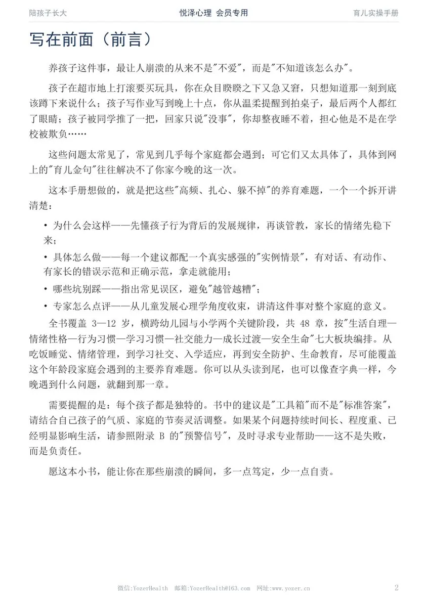
所有电子书内容在打包阶段即完成加密封装，APK 内不存在可直接打开的明文页面或文本。
封面、页面图像与朗读文本封装为 YZPK 加密包，经 zlib 压缩与 SHA-256 密钥流混淆，文件管理器无法直接打开。
不申请网络权限，不上传阅读记录；打开 App 即可阅读全部内置内容，飞机模式也能正常使用。
无需注册登录，不收集阅读偏好，也没有广告打扰；打开 App 就是属于你的安静书架。
不需要。所有内容都已加密内置在 App 中，阅读、自动翻页、语音朗读均离线完成。
请确认手机系统已安装中文 TTS 语音数据、媒体音量已打开；缺少中文语音数据时 App 会给出提示。
不会。当前页朗读完成后才会翻到下一页，并开始朗读新页内容；关闭朗读时则严格按所选间隔翻页。
支持 Android 8.0（API 26）及以上版本，安装包约 121 MB，无需额外下载数据。
23 本书全部加密内置，安装包约 121 MB。点击前往 GitHub Releases 获取。
儿童心理与亲子成长电子书阅读器
安装包由 Yozer 官方发布于 GitHub Releases；下载前请确认发布者与文件名一致。